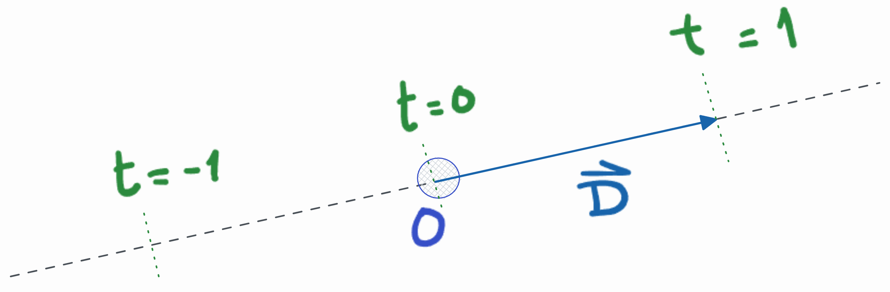

Se procederá a analizar los algoritmos modernos de visualización 3D realista usando métodos de Monte-Carlo, y su implementación en hardware gráfico moderno (GPUs) específicamente diseñadas para aceleración de Ray-Tracing. Se diseñará e implementará un sistema software de síntesis de imágenes realistas por path tracing y muestreo directo de fuentes de luz, que haga uso del hardware gráfico, y se analizará su eficiencia en tiempo en relación a la calidad de las imágenes y en comparación con una implementación exclusivamente sobre CPU.
Se realizará una revisión bibliográfica de los métodos de Montecarlo que se aplican de manera habitual para la visualización de imagenes 3D. Se examinarán los puntos fuertes y débiles de cada una de las técnicas, con el objetivo de minimizar el error en la recosntrucción de la imagen sin que esto suponga un alto coste computacional. Se investigarán las soluciones propuestas para el futuro del área.
Translation. It’ll be left as is until there’s a definitive abstract
Aquí es donde me pongo ñoño
¡Parece que has llegado un poco pronto! Si lo has hecho voluntariamente, ¡muchas gracias! Este proyecto debería estar finalizado en verano de 2022.
Mientras tanto, actualizaré poco a poco el contenido. Si quieres ir comprobando los progresos, puedes visitar Asmilex/Raytracing en Github para ver el estado del desarrollo.
Ser capaces de capturar un momento.
Desde siempre, este ha sido uno de los sueños de la humanidad. La capacidad de retener lo que ven nuestros ojos comenzó con simples pinturas ruprestres. Con el tiempo, el arte evolucionó, así como la capacidad de retratar nuestra percepción con mayor fidelidad.
A inicios del siglo XVIII, se caputaron las primeras imágenes con una cámara gracias a Nicéphore Niépce. Sería una imagen primitiva, claro; pero era funcional. Gracias a la compañía Kodak, la fotografía se extendió al consumidor rápidamente sobre 1890. Más tarde llegaría la fotografía digital, la cual simplificaría muchos de los problemas de las cámaras tradicionales.
Hablando de digital. Los ordenadores personales modernos nacieron unos años más tarde. Los usuarios eran capaces de mostrar imágenes en pantalla, que cambiaban bajo demanda. Y, entonces, nos hicimos una pregunta…
¿Podríamos simular la vida real para mostrarla en pantalla?
Como era de esperar, esto es complicado de lograr. Para conseguirlo, hemos necesitado crear abstracciones de conceptos que nos resultan naturales, como objetos, luces y seres vivos. “Cosas” que un ordenador no entiende, y sin embargo, para nosotros funcionan.
Así, nació la geometría, los puntos de luces, texturas, sombreados, y otros elementos de un escenario digital. Pero, por muchas abstracciones elegantes que tengamos, no nos basta. Necesitamos visualizarlas. Y como podemos imaginarnos, esto es un proceso costoso.
La rasterización es el proceso mediante el cual estos objetos tridimensionales se transforman en bidimensionales. Proyectando acordemente el entorno a una cámara, conseguimos colorear un pixel, de forma que represente lo que se ve en ese mundo.
[TODO insertar imagen rasterización. NOTE quizás debería extender un poco más esta parte? Parece que se queda algo coja la explicación.]
Aunque esta técnica es bastante eficiente en términos de computación y ha evolucionado mucho, rápidamente saturamos sus posibilidades. Conceptos como shadow maps, baked lightning, o reflection cubemaps intentan solventar lo que no es posible con rasterización: preguntrarnos qué es lo que se encuentra alrededor nuestra.
En parte, nos olvidamos de la intuitiva realidad, para centrarnos en aquello computacionalmente viable.
Y, entonces, en 1960 el trazado de rayos con una simple idea intuitiva .
En resumidas cuentas, ray tracing (o trazado de rayos en español), se basa en disparar fotones desde nuestras luces digitales y hacerlos rebotar en la escena.
De esta forma, simulamos cómo se comporta la luz. Al impactar en un objeto, sufre un cambio en su trayectoria. Este cambio origina nuevos rayos, que vuelven a dispersarse por la escena. Estos nuevos rayos dependerán de las propiedades del objeto con el que hayan impactado. Con el tiempo necesario, lo que veremos desde nuestra cámara será una representación fotorealista de lo que habita en ese universo.
Esta técnica, tan estúpidamente intuitiva, se ha hecho famosa por su simpleza y su elegancia. Pues claro que la respuesta a “¿Cómo simulamos fielmente una imagen en un ordenador?” es “Representando la luz de forma realista”.
Aunque, quizás intuitiva no sea la palabra. Podemos llamarla natural, eso sí. A fin de cuentas, fue a partir del siglo XVIII cuando empezamos a entender que podíamos capturar la luz. Nuestros antepasados tenían teorías, pero no podían explicar por qué veíamos el mundo.
Ahora sí que sabemos cómo funciona. Entendiendo el por qué lo hace nos permitirá programarlo. Y, resulta que funciona impresionantemente bien.
Atrás se quedan los hacks necesarios para rasterización. Los cubemaps no son esenciales para los reflejos, y no necesitamos cámaras virtuales para calcular sombras. Ray tracing permite simular fácilmente efectos como reflejos, refracción, desenfoque de movimiento, aberración cromática… Incluso fenómenos físicos propios de las particulas y las ondas.
Espera. Si tan bueno es, ¿por qué no lo usamos en todos lados?
Por desgracia, el elefante en la sala es el rendimiento. Como era de esperar, disparar rayos a diestro y siniestro es costoso. Muy costoso.
A diferencia del universo, nosotros no nos podemos permitir el lujo de usar fotones de tamaño infinitesimal y dispersiones casi infinitas. Nos pasaríamos una eternidad esperando. Y para ver una imagen en nuestra pantalla necesitaremos estar vivos, claro.
Debemos evitar la fuerza bruta. Dado que la idea es tan elegante, la respuesta no está en el “qué”, sino en el “cómo”. Si disparamos y dispersamos rayos con cabeza seremos capaces de obtener lo que buscamos en un tiempo razonable.
Hace unos años, al hablar de tiempo razonable, nos referiríamos a horas. Quizás días. Producir un frame podría suponer una cantidad de tiempo impensable para un ordenador de consumidor. Hoy en día también ocurre esto, claro está. Pero la tecnología evoluciona.
Podemos bajarlo a milisegundos.
Hemos entrado en la era del real time ray tracing.
TODO hablar de los objetivos del trabajo.
Referencias que pasar después:
Antes de comenzar, asentemos la notación que utilizaremos.
Para denotar a los puntos, usaremos letras mayúsculas como \(P\) o \(Q\). Los escalares vendrán dados por letras minúsculas, como \(a\) o \(b\); mientras que los vectores irán en letra minúscula negrita (p.e.: \(\mathbf{v}\) o \(\mathbf{w}\)). Además, serán vectores columnas. Aquellos normalizados los representaremos con un gorrito: \(\hat{\mathbf{v}} = \frac{\mathbf{v}}{\Vert\mathbf{v}\Vert}\). Las matrices, por otra parte, vendrán dadas por letra mayúscula en negrita, como \(\mathbf{M}\). También son columna.
El producto escalar vendrá dado por \(\mathbf{v} \cdot \mathbf{w}\), y el vectorial por \(\mathbf{v} \times \mathbf{w}\).
La notación usada para las variables aleatorias será la habitual: mayúsculas como \(X\). Su valor esperado vendrá dado por \(E\left[X\right]\) y la varianza por \(V\left[X\right]\).
TODO: notación para las funciones de densidad y distribución. TODO: acceso a componentes de un vector/matriz?
Empecemos por definir lo que es un rayo.
Un rayo es una función \(P(t) = O + tD\), donde \(O\) es el origin, \(D\) la dirección, y \(t \in \mathbb{R}\). Podemos considerarlo una interpolación entre dos puntos en el espacio, donde \(t\) controla la posición en la que nos encontramos.
Por ejemplo, si \(t = 0\), obtendremos el origen. Si \(t = 1\), obtendremos el punto correspondiente a la dirección. Usando valores negativos vamos hacia atrás.

Dado que estos puntos estarán generalmente en \(\mathbb{R}^3\), podemos escribirlo como
\[ P(t) = (O_x, O_y, O_z) + t (D_x, D_y, D_z) \]
Estos rayos los dispararemos a través de una cámara virtual, que estará enfocando a la escena. De esta forma, los haremos rebotar con los objetos que se encuentren en el camino del rayo. A este proceso lo llamaremos ray casting.
TODO foto de cámara - pixel - rayo - objeto.
Generalmente, nos quedaremos con el primer objeto que nos encontremos en su camino. Aunque, a veces, nos interesará saber todos con los que se encuentre.
Cuando un rayo impacta con un objeto, adquirirá parte de las propiedades lumínicas del punto de impacto. Por ejemplo, cuánta luz proporciona la lámpara que tiene encima la esfera de la figura anterior.
Una vez recojamos la información que nos interese, aplicaremos otro raycast desde el nuevo punto de impacto, escogiendo una nueva dirección determinada. Esta dirección dependerá del tipo de material del objeto. Y, de hecho, algunos serán capaces de invocar varios rayos.
Por ejemplo, los espejos reflejan la luz casi de forma perfecta; mientras que otros elementos como el agua o el cristal reflejan y refractan luz, así que necesitaremos generar dos nuevos raycast.
Usando suficientes rayos obtendremos la imagen de la escena. A este proceso de ray casting recursivo es lo que se conoce como ray tracing.
Como este proceso puede continuar indefinidamente, tendremos que controlar la profundidad de la recursión. A mayor profundidad, mayor calidad de imagen; pero también, mayor tiempo de ejecución.
Una de las partes más importantes de ray tracing, y a la que quizás dedicaremos más tiempo es a la elección de la dirección.
Hay varios factores que entran en juego a la hora de decidir qué hacemos cuando impactamos una nueva geometría:
TODO - hablar de las fases de desarrollo. Interpretación propia de Agile. Documentación y código desarrollado a la par, mediante issues. Adaptación de los requisitos conforme se avanza. Beneficios de una página web (seguramente debería ser su propia sección)
TODO - Hablar de cómo se utiliza Github y sus tecnologías para agrupar todo el trabajo. Hablar de la guía de estilos, y cómo los emojis ayudan a identificar rápidamente secciones.
TODO - Hablar de cómo se usa el sistema de integración continua para construir la web y el pdf
TODO - Hablar de cómo se gestiona el trabajo mediante issues, recapitulados todos con Projects.